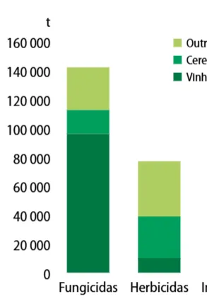
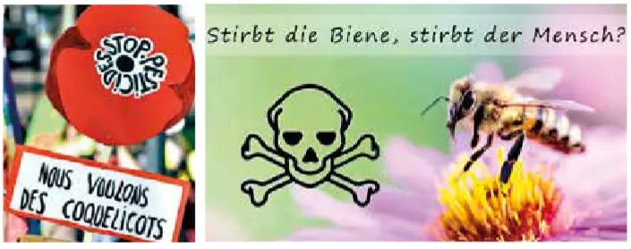
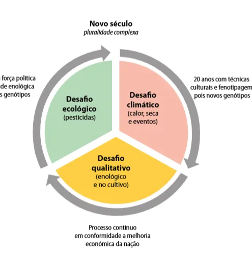
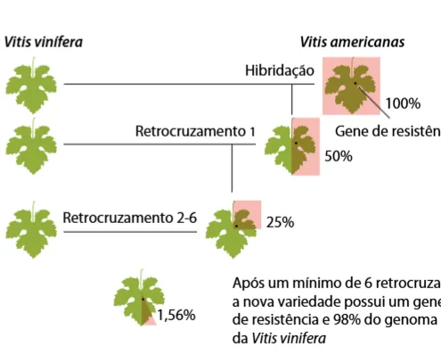
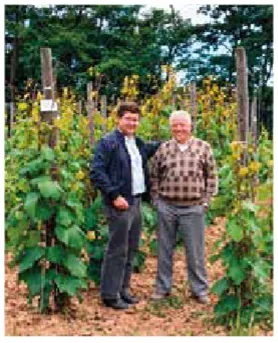
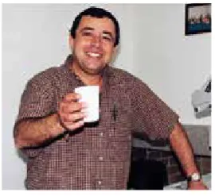

Capítulo 02 · Mudança de um paradigma
Mudança de um paradigma
À medida que uma nova geração, com crescente influência política, passou a questionar a primazia da tradição histórica da produção agrícola, verificou-se uma mudança de paradigma a favor de políticas de melhoramento genético das castas e do vinho.
Nova consciência ambiental com a vinha
Enquanto nos países da União Europeia já existia, desde a década de 1960, uma sólida tradição na identificação, seleção clonal e valorização das respetivas castas autóctones, Portugal apresentava ainda um atraso significativo neste domínio. Assim, durante a década de 1980, a consciência geral limitava-se essencialmente à necessidade de melhorar o património varietal nacional através das técnicas de melhoramento genético quantitativo então disponíveis. Consequentemente, a resposta genética aos desafios ambientais não fazia parte, nem da consciência predominante do setor vitivinícola, nem dos objetivos de melhoramento prosseguidos pela Rede Nacional de Seleção da Videira (RNSV).
Em contrapartida, os Viveiros PLANSEL acompanharam desde o início a evolução científica internacional, reconhecendo que o futuro do melhoramento da videira passaria pela integração das novas abordagens da genética e da biotecnologia, orientadas para a obtenção de castas simultaneamente mais sustentáveis, resistentes às principais doenças e adaptadas às condições vitícolas portuguesas.


Outras Culturas
Fungicidas Herbicidas Inseticidas
Aplicação de pesticidas na agricultura
Com o crescente aumento da consciência pública relativamente à perda de biodiversidade vegetal e animal, bem como à crescente influência de formadores de opinião que, para além dos argumentos estritamente científicos, passaram a alertar para os potenciais efeitos nocivos dos produtos fitofarmacêuticos autorizados sobre a saúde humana e o ambiente, começou igualmente a ser questionada a estratégia tradicional de controlo do míldio e do oídio na vinha, baseada essencialmente no combate aos sintomas através da aplicação de fungicidas.
Esta abordagem passou também a ser objeto de uma avaliação crítica por parte dos decisores políticos, cada vez mais influenciados por políticas de sustentabilidade ambiental e pelos princípios associados à transição ecológica, favorecendo a procura de soluções preventivas e geneticamente sustentáveis para a proteção da vinha.
Tanto em França como na Alemanha, esta evolução conduziu a uma forte pressão da opinião pública e a um profundo repensar das estratégias do setor vitivinícola, favorecendo novos paradigmas, assentes na sustentabilidade ecológica, na resiliência e na agricultura regenerativa.
A França, que devido à ampla difusão histórica das castas híbridas durante a primeira metade do século XX tinha desenvolvido uma posição política particularmente restritiva em relação às castas interespecíficas, tornou-se, já no início do século XXI, sob crescente pressão política e ambiental, um dos principais impulsionadores de uma nova política de melhoramento genético da videira. Através da aplicação de técnicas de biologia molecular e da estratégia de acumulação de genes de resistência (piramidação de resistências), o programa de melhoramento desenvolvido pelo INRAE Colmar estabeleceu novos padrões de referên-
cia na Europa para a obtenção de castas resistentes às principais doenças fúngicas.
(Fonte: Revista APH nº 135, de dezembro 2019; autores J. Böhm, A. Peixe)
Esta orientação foi de tal forma marcante que, durante

Depende da força política e da qualidade enológica dos nossos genótipos
as duas primeiras décadas após a adesão à União Europeia, o melhoramento sexuado da videira praticamente não beneficiou de apoio institucional em Portugal. Em contraste, a França lançou, nesse mesmo período, um programa nacional coletivo de grande dimensão dedicado ao desenvolvimento de castas resistentes às principais doenças fúngicas. Este esforço culminou no programa ResDur, hoje amplamente reconhecido como o mais importante investimento mundial em melhoramento genético da videira para resistência a doenças, tanto pela sua dimensão científica como pelo seu impacto estratégico na viticultura sustentável.
A reviravolta estratégica por iniciativa da visão científica
Apesar deste enquadramento regulamentar, a comunidade científica reconheceu progressivamente que o problema não residia na hibridação em si, mas sim na elevada proporção de genoma proveniente de espécies americanas presente nos primeiros híbridos. Tornou-se evidente que seria possível desenvolver novas castas resistentes desde que, através de sucessivos retrocruzamentos, se recuperasse praticamente todo o património genético e enológico de Vitis vinifera, mantendo apenas os loci responsáveis pela resistência às doenças.
A viticultura portuguesa enfrentou desafios estruturais decorrentes das alterações climáticas, da crescente pressão de doenças criptogâmicas, da necessidade de redução da utilização de produtos fitofarmacêuticos e dos objetivos definidos pelas políticas europeias de sustentabilidade ambiental. Apesar dos avanços científicos, também na Alemanha persistiram durante muitos anos fortes preconceitos relativamente às novas castas resistentes, consequência da experiência pouco favorável anteriormente obtida com os híbridos americanos e franco-americanos, cuja qualidade

Após um mínimo de 6 retrocruzamentos,
enológica era frequentemente considerada inferior. Em consequência, estas novas castas demoraram a ser reconhecidas como tendo interesse económico para a viticultura.
Apenas em 1996 o então Bundesforschungs-Anstalt
Geilweilerhof conseguiu, como primeira entidade melhoradora da videira na Europa, obter o reconhecimento oficial da casta “Regent” como uma variedade tipicamente Vitis vinifera, apresentando uma introgressão genética inferior a cerca de 20 % proveniente de espécies não Vitis vinifera. Este reconhecimento constituiu um marco decisivo para a aceitação das castas resistentes na Europa. Em menos de uma década, a área plantada com a “Regent” ultrapassou
2.000 hectares na Alemanha e dezenas de castas novas foram admitidas pela produção de vinho.
Exemplos de castas PIWI obtidas no século passado
Alemanha, Geilweilerhof: Regent, Phoenix, Sirius, Staufer,
Orion, Villaris, Felicia, Calandro, Reberger
Alemanha: Freiburg Merzling, Johanniter, Bronner, Solaris,
Cabernet Cortis, Monarch, Cabernet Carol, Cabernet
Carbon, Helios, Prior, Muscaris, SauvignierGris
Alemanha Geisenheim: Rondo, Prinzipal, Saphira
Hungria: Bianca, Zalagyöngye, Kunleany, Kunbarat,
Refren, Fanny, HongrieLilla, Jasmine
Suíça, ACW Chqngins: Gamaret, Galotta, Garonoir,
Diolinoir, Mara, Carminoir, Divico
Suíça, V. Blatter e Borioli: Cabernet Jura, Pinotin,
Cabertin, Cabernet blanc, Cabernet Noir Áustria: Aromera, Vinett, Rathay, Roesler, Donauriesling,
Vinera, Vinore
República Checa: Malverina, Jolanka, Nativa, Cerason,
Laurot, Savilon, Sevar
Roménia: Admira, Andrevit, Brumariu, Purpuriu, Radames,
Valeria
Moldávia: Alb de Laloveni, Apirenroz, Arkadia, Fesztivalnyj,
Lyana, Moldávia
Sérvia: Aranka, Evita, Kozmopolita, Mila, Panonia
Itália, Udine Uni. /IGA: Sauvignon Kretos, Fleurtai,
Julius,Soreli, Cab. Volos,Merlot Kanthus, Merlot
Khorus, Sauvi. Nepis, Sauvi. Rytos, Cab. Eidos
A situação em Portugal
Com a eliminação da chamada "garantie du bon fin" (destilação remunerada dos excedentes de produção) e o desaparecimento dos mercados coloniais protegidos, o setor profissional vitivinícola português atravessou uma profunda crise estrutural. A superfície vitícola e o consumo de vinho reduziram-se para cerca de metade. Paralelamente, a estratégia altamente competitiva, desenvolvida pela vitivinicultura australiana, obrigou a União Europeia a reformular grande parte do enquadramento regulamentar do setor, eliminando numerosas restrições à produção e à vinificação e permitindo a adoção de práticas inovadoras capazes de aumentar a competitividade internacional dos vinhos europeus. Muitas empresas vitivinícolas desapareceram durante este processo de transformação, enquanto novas unidades empresariais, tecnologicamente mais avançadas e orientadas para o mercado, surgiram e alguns dos velhos líderes de mercado se consolidaram.
A oferta de uma nova vitivinicultura aproveitou-se da situação da degradação da viticultura sem clara orientação, que foi abandonada a favor do vinho de castas selecionadas e orientada para a origem DO, baseada na valorização das castas nacionais e na qualidade diferenciada. Este processo rapidamente se tornou um caso de sucesso internacional.
O programa de cruzamento de castas em Portugal teve tradição, mas foi completamente suprimido da ideia das castas autóctones.
Esta estratégia refletia a realidade da viticultura portuguesa de então, caracterizada pela inexistência de uma política nacional estruturada de seleção de castas. A seleção clonal e a seleção sanitária das variedades autóctones apenas vieram a ser desenvolvidas de forma sistemática a partir do final da década de 1970 e, sobretudo, nos anos 1980. Perante produtividades médias nacionais pouco superiores a 2.000 l/ha, esperava-se que as novas castas permitissem ganhos significativos de rendimento. Assim, numerosas obtenções de cruzamento (do Prof. Leal Ferreira de Almeida/ISA) foram instaladas em ensaios oficiais em diferentes regiões vitícolas do continente e, em particular, na Madeira e nos Açores. Embora tenham demonstrado, em muitos casos, um potencial produtivo superior, a sua adoção comercial revelou-se reduzida e pouco duradoura. Com exceção da variedade de mesa “Dona Maria” e da casta branca de elevado rendimento “Serra Nova”, nenhuma das novas obtenções alcançou expressão significativa na viticultura nacional. Ainda assim, várias dezenas destas castas foram inscritas no Catálogo Nacional de Variedades e autorizadas para a produção de vinho.
Paralelamente, admite-se que o Professor Miguel Pereira Coutinho tenha iniciado, em 1942, no Instituto Superior de Agronomia (ISA), um programa de melhoramento genético da videira. Durante a década de 1970, foram realizados cruzamentos interespecíficos com o objetivo específico de obter resistência ao míldio (Plasmopara viticola). Algumas destas seleções históricas resistentes, designadamente C.19 e C.27, continuam atualmente conservadas pelo INIAV na coleção ampelográfica CAN, constituindo um importante património genético nacional.
Contudo, o êxito alcançado, a partir do final da década de 1970, pelo programa nacional de recuperação e valorização das castas autóctones, acompanhado pela “Rede Nacional de Seleção da Videira (RNSV)”, através da seleção policlonal das castas autóctones de referência, de elevado rigor científico, conduziu a uma alteração das prioridades da investigação. No novo século, a melhoria genética perdeu protagonismo público, a favor da manutenção da biodiversidade e de técnicas agronómicas mais resilientes.
O programa dos Viveiros PLANSEL
O programa dos viveiros PLANSEL foi claramente orientado, tal como este da RNSV, a castas autóctones, talvez com a pequena diferença de se submeter as regras de admissão à certificação UE, com a seleção monoclonal e sanitária com biótipos distintos, para rapidamente ter resposta às matérias certificadas importadas. Mas existia também desde o início a ideia da obtenção de castas resistentes.
Os Viveiros PLANSEL iniciaram-se, em 1984, com material genético proveniente de Geisenheim, constituindo, em colaboração com a Adega Experimental da Mitra
da Universidade de Évora, um dos primeiros programas desenvolvidos fora da Alemanha especificamente orientados para a introdução de castas de elevada qualidade enológica com resistência genética às principais doenças fúngicas na viticultura. Como Jorge Böhm esteve inscrito, entre 1980 e 1982, como estudante convidado na escola superior de Geisenheim, com o objetivo de se especializar no melhoramento genético das castas portuguesas, acabou por ter contacto direto com o programa de investigação em melhoramento de videiras resistentes, então desenvolvido naquela instituição, uma das mais avançadas da Europa na época.
Com base nos conhecimentos científicos disponíveis naquele período, foram iniciadas em Portugal duas iniciativas distintas, que constituíram os primeiros passos de uma estratégia nacional de introdução da resistência genética no melhoramento da videira. 1. Importação de Germoplasma resistente, 1984 (Projeto KfW/ governo alemão: transferência tec.) Em 1984, foram introduzidos em Portugal 38 genótipos provenientes do programa de melhoramento de Geisenheim. Estes materiais representavam, na época, o estado da arte da seleção de videiras com resistência ao míldio e ao oídio e destinavam-se à avaliação do seu potencial de adaptação às condições edafoclimáticas portuguesas.


Entretanto, o serviço competente pela admissão de castas no Catálogo Nacional das Variedades (CNVV) correspondeu sempre às regras comunitárias e apresentou publicamente as regras gerais para a respetiva homologação (Eng. Katia Teixeira: “Homologação de castas resistentes”), admitindo finalmente, em 2020, a casta Defensor (b), cl. 202 JBP PT, em nome de PLANSEL JBP, através do despacho nº 3040/2020. Apesar deste facto, continua a existir até hoje no setor profissional um espírito adverso a castas novas resistentes. 2. Melhoramento genético próprio, baseado
no cruzamento, 1999 (Projeto AGRI 2.4) Em conjunto com a Universidade de Évora, foi iniciado um programa próprio de melhoramento genético, baseado no cruzamento de castas portuguesas tradicionalmente cultivadas no Alentejo com pólen de castas alemãs resistentes, em particular da casta “Regent”. O objetivo era combinar a elevada qualidade enológica e a adaptação regional das castas nacionais com a resistência genética às principais doenças fúngicas.
Estes genótipos tinham sido excluídos da seleção do Instituto Alemão por não corresponderem às condições agroclimáticas da região de Geisenheim, caracterizada por um perfil hélio-térmico substancialmente demasiado fraco para produção de uvas maduras nesta latitude geográfica. Como consequência, alguns destes genótipos revelaram uma adaptação agronómica e enológica satisfatória em Portugal.
Apesar destas limitações, a introdução deste material genético constituiu um marco importante, pois permitiu adquirir experiência prática em matéria de resistência genética, adaptação varietal e comportamento agronómico, criando a base científica que viria posteriormente a orientar o desenvolvimento de programas de cruzamento especificamente direcionados para a obtenção de castas resistentes adaptadas às condições climáticas, vitícolas e enológicas em Portugal.
Por decisão administrativa de acabar com a política de melhoramento da videira a favor de um “programa de proteção integrada”, contudo, os resultados deste programa apenas conseguiram sobreviver graças ao empenho e aos recursos próprios dos seus promotores, durante um período de cerca de quinze anos, em que o melhoramento genético da videira em Portugal esteve excluído das políticas públicas de apoio e financiamento. Apesar desta ausência de apoio institucional, foi possível preservar a continuidade do programa, ainda que de forma muita limitada.
A primeira geração de castas resistentes surge décadas mais tarde, num contexto marcado por uma nova orientação administrativa e disponibilidade científica. Os genótipos foram então submetidos a ensaios de campo e a testes biológicos de resistência, incluindo ensaios em discos foliares e outros métodos laboratoriais. No entanto, como muitas destas castas incorporavam apenas um único gene de resistência — frequentemente de eficácia limitada —, apenas um número reduzido de candidatos pôde avançar para os ensaios de avaliação preliminar.
Importa salientar que o genótipo “AGRO 14”, desenvolvido no âmbito do programa AGRO 2.4, se destacou por reunir três genes de resistência e por demonstrar uma qualidade enológica promissora, revelando um elevado potencial para os futuros processos de seleção.
Resultados concretos
em material vitícola resistente nesta fase de melhoramento PLANSEL/U.Évora: a. Apoio KfW (transferência da Univ. Geisenheim): Defensor (b); Tintão (t) b. Projeto AGRO 2.4 (Retrocruzamento com castas
nacionais): genótipo AGRO 14 (t)
Conclusão
A primeira fase da retoma do melhoramento genético de castas resistentes com tipicidade enológica de Vitis vinifera, depois de uma crise grave que culminou com a sua proibição, baseou-se na experiência adquirida em ensaios de estufa e de campo, recorrendo a novas castas resultado de retrocruzamento.
A introgressão de genes de resistência foi realizada através de sucessivos retrocruzamentos entre híbridos franceses, reconhecidos pela sua tolerância às principais doenças fúngicas da videira e às castas autóctones dos diferentes países de tradição vitivinícola.